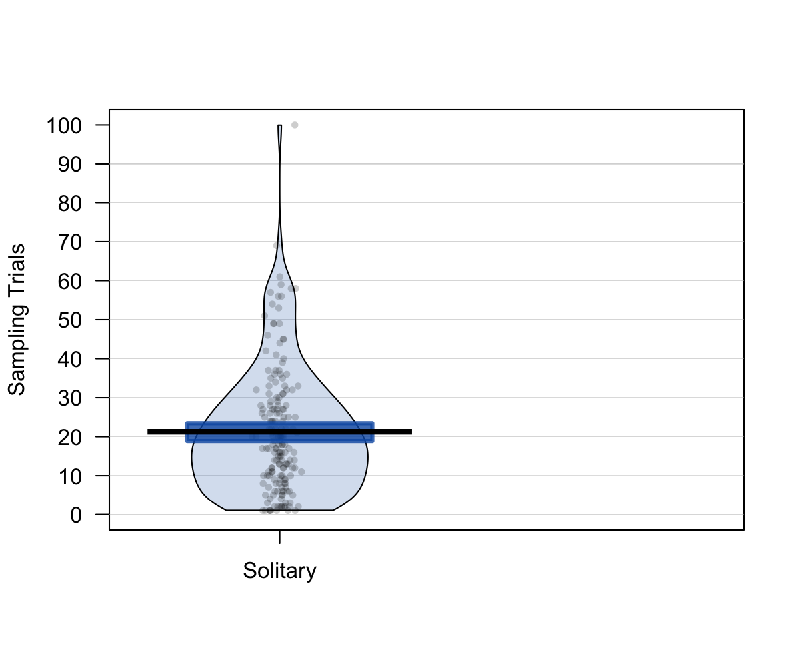

Simply your life with R
From making decisions to sharing and documenting research
Nathaniel Phillips, University of Basel
Department Presentation, University of Zurich, Department of Economics
Four main research topics, one common thread

Hermit crabs
Rotjan, R. D., Chabot, J. R., & Lewis, S. M. (2010). Social context of shell acquisition in Coenobita clypeatus hermit crabs. Behavioral Ecology, 21(3), 639–646.
Phillips et al. (2014)


The Competitive Sampling Game (CSG)

Example: Phillips et al. (2014)

Example: Phillips et al. (2014)

Example: Phillips et al. (2014)

Why did competition decrease search so much?

Why did competition decrease search so much?
Example: Phillips et al. (2014)

Accessing the data from Phillips et al. (2014)
How can I store the data, analyses, and documentation from Phillips et al. (2014) in an open and transparent way?
For many researchers, while the publication is important to share, the data and analyses details are not.


A solution: Reasearch as an R manuscript package
- Store everything in an R package: Data, data descriptions, analyses, tutorials.

- Share the package at the time of publication (before someone asks for it)
- Now everyone (even your future self) can always recover the data and analyses. Anytime. Anywhere.
Phillips et al. (2014)
All data analyses, and data descriptions are stored in an R manuscript package called phillips2014rivals available at https://goo.gl/q6GvBk
# Install the phillips2014rivals R package
install.packages("https://goo.gl/q6GvBk",
repos = NULL,
type = "source")

Data documentation
Advantages of an R manuscript package
- Data are fully organized and documented.
- Accessible to anyone (like your future self) with one line of code.
- Packages make your research interactive.
Making good decisions with R

Making good decisions

Fast and Frugal Trees (FFTs)
- Simple, sequential, rule-based decision algorithms.
- A fast and frugal decision tree (FFT) is a very simple decision tree (Martignon et al., 2008).
- Predict depression (Jenny et al., 2013)
- Terrorist attacks (Garcia, 2016)
- Bank failure (Aikman et al., 2014; Neth et al., 2014)

Neth et al. (2014). "Homo heuristicus in the financial world".
Predicting patient success
- Data set: 1101 Baden Wuerttemberg patients, 46 cues (age, sex, diagnosis, drug history, etc...)
- Goal: Predict who will be successfully released with an FFT.
- Solution:
FFTrees, an easy-to-use R package that constructs, visualizes, and implements FFTs from any data.
Phillips et al. (under review). FFTrees: An R package to create, visualise, and impliment fast and frugal decision trees

FFTrees
# Step 0: Install and load FFTrees
install.packages("FFTrees")
library("FFTrees")
# Step 1: Create the trees
patient.fft <- FFTrees(formula = fds.63.crit ~.,
data = fds.63.data)
# Step 2: View summary statistics
print(patient.fft)
# Step 3: Visualise the tree
plot(patient.fft)
An FFT of the Forensic data


How accurate can a simple tree be?
Prediction simulation
- 1,000 Cross-validation prediction simulations
- Compare FFTrees to regression and non-frugal decision trees.

How accurate can a simple tree be?

Generalizing FFTrees
- The
FFTreespackage can be used with any dataset with a binary criterion. - Simulation: 10 diverse datasets taken from the UCI Machine Learning Database.
- FFTrees vs. regression, Naive Bayes, Random Forests and more
How well can a simple fast and frugal tree predict data?

Prediction accuracy across 10 dasets

Phillips, Neth, Gaissmaier & Woike (under review)
Prediction accuracy across 10 dasets

Prediction accuracy across 10 dasets

Speed and frugality
Simplifying your life with R
- R can help you promote and share your work with others (and your future self).
- R can help you make simpler, better decisions (or simply clarify what's really important) with
FFTrees.

Collaborators
Joerg Rieskamp (University of Basel)
Ralph Hertwig (MPI for Human Development)
Yaakov Kareev (Hebrew University of Jerusalem)
Judith Avrahami (Hebrew University of Jerusalem)
Wolfgang Gaissmaier (University of Konstanz)
Hansjoerg Neth (University of Konstanz)
Jan Woike (MPI for Human Development)

Simply your life with R. From making decisions to sharing and documenting research
This presentation: https://ndphillips.github.io/UZurich-6April2017/
Website: https://ndphillips.github.io
Email: Nathaniel.D.Phillips.is@gmail.com
FFTrees Package: install.packages("FFTrees")
yarrr package: install.packages("yarrr")
YaRrr! The Pirate's Guide to R: www.thepiratesguidetor.com
Efficiency
FFTs are very cheap to implement
Heart disease data
- Regression: $300
- rpart: > $100
- Heart disease FFT: $75.91